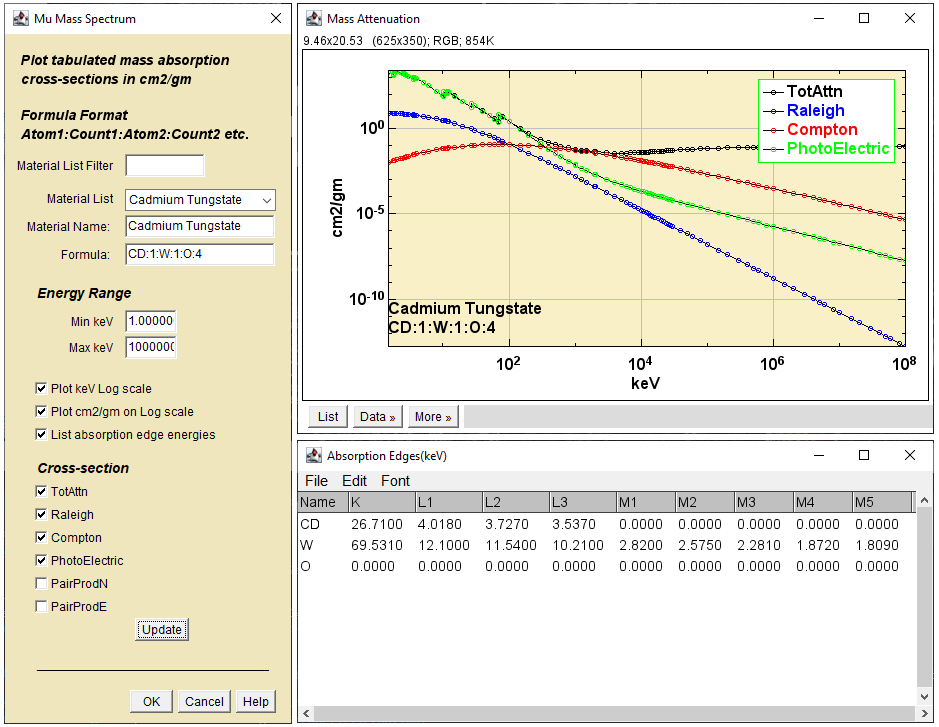

This plugin provides a non-modal dialog that allows the user to
call up X-ray spectral data for atoms and compounds while working with
other images.

X-ray Calculator Dialog.
Dialog Fields.
Material List Filter - Clips the materials pull down list to materials
that begin with the characters in this textbox.
Material List - Pick a material from this list imported from
the plugins/DialogData/DefaultMaterials.csv file. An example list can be downloaded from here.
Material Name - Auto-populated from the list choice. Edit to
change the name.
Formula - Auto-populated from the list choice. Edit to change
the formula.
Min keV - The minimum energy for the plot x-axis.
Max keV - The maximum energy for the plot x-axis.
Plot keV Log scale - Use a log scale for the plot x-axis.
Plot cm2/gm on Log scale - Use a log scale for the plot
y-axis.
List absorption edge energies - Show a list of edges in the
atom or formula.
Cross-section - Check the attenuations you want to plot.
Update - Click to plot the X-ray attenuation without exiting.
OK - Click to plot the X-ray attenuation data and exit.
Cancel - Click to close the associated windows and exit .